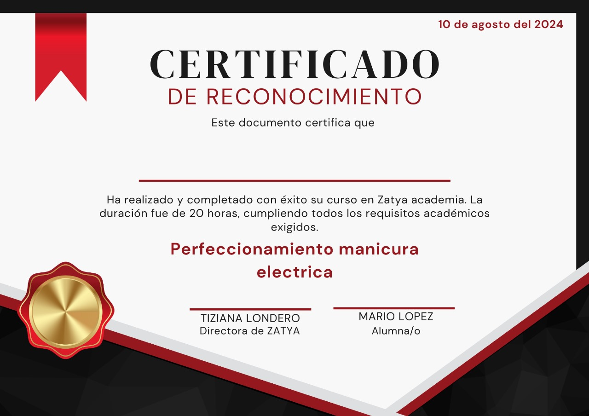

Obtenga un certificado de estudios
- Reconocimiento Profesional: Este certificado valida tus habilidades avanzadas en el uso del torno, lo que te distingue como un profesional capacitado en técnicas especializadas de manicura.
- Confianza del Cliente: Los clientes tienden a confiar más en profesionales que cuentan con certificaciones que respaldan su formación y experiencia,
- Diferenciación en el Mercado: este certificado te ayuda a destacar, mostrando que estás comprometido con la mejora continua y la excelencia en el servicio.